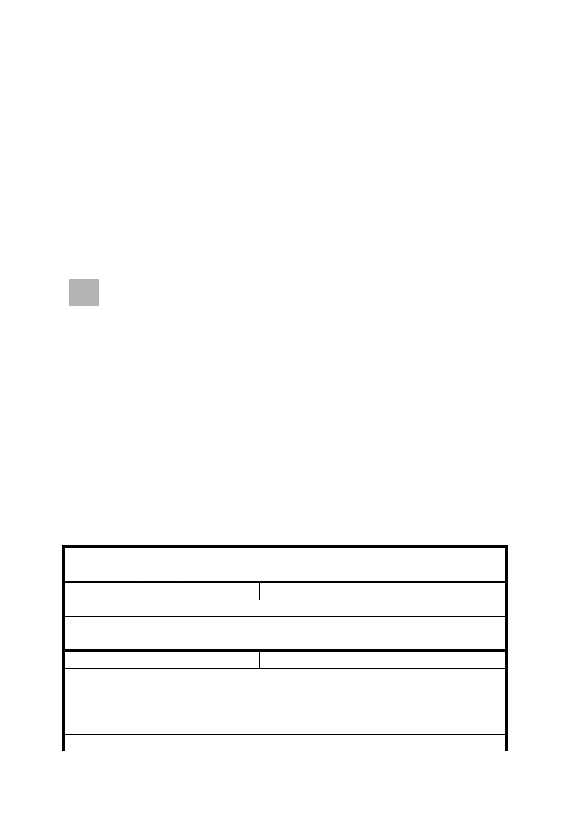

土地使用分區為公園用地（運動公園），目前尚未開闢，
以農業使用為主。
四、 變更計畫內容：
變更公園用地為自來水事業用地。
五、 實施進度與經費：由臺北自來水事業處負責土地取得及開
闢，預定完工期程為民國102年。
六、 土地使用管制：加壓站面積在700平方公尺以下。
七、 全案係市府98年12月17日府都規字第09837414600號公告公
開展覽並函送到會。
八、 公民或團體所提意見：計2件。
九、 申請單位：臺北自來水事業處。
十、 法令依據：都市計畫法第27條第1項第4款。
決議：
一、本案除以下幾點外，其餘依市府所送公展計畫書及市府都市
發展局會議當日所送補充會議資料內容修正通過。
（一）本案計畫範圍內公有土地係屬有償撥用，請修正計畫書第5
頁土地取得方式暨開闢經費表。
（二）本案臨大度路退縮20公尺、臨貴子坑溪退縮80公尺為原則，
並應植栽綠化。
（三）為整體景觀考量，本案開發建築前仍應經臺北市都市設計
及開發審議委員會審議通過。
二、公民或團體所提意見審決如後附綜理表。
臺北市都市計畫委員會公民或團體所提意見綜理表
案
名
變更臺北市北投區八仙段二小段 719 地號等 10 筆土地及 721
地號部分土地公園用地為自來水事業用地主要計畫案
編 號 1 陳情人 陳吉勝
陳 情 理 由 建議先將整個關渡平原完整規劃，再准予使用。
建 議 辦 法 大度路南北皆以區域重劃，保障百姓產業。
委員會決議 錄案供市府參考。
編 號 2 陳情人 陳家偉
1. 土地增值部分政府徵收土地增值稅，因政府規劃所需變更
陳情理由
地目，造成公告地價（現值）下跌，沒有配套措施。
2. 關渡水鳥保護區徵收時，當年補貼金額每坪為 10 萬元，
今日徵收補貼每坪 6.7 萬元，不合理。
建 議 辦 法 1. 土地增值稅全面徵收等，是增值時政府對人民的公平做
- 19 -